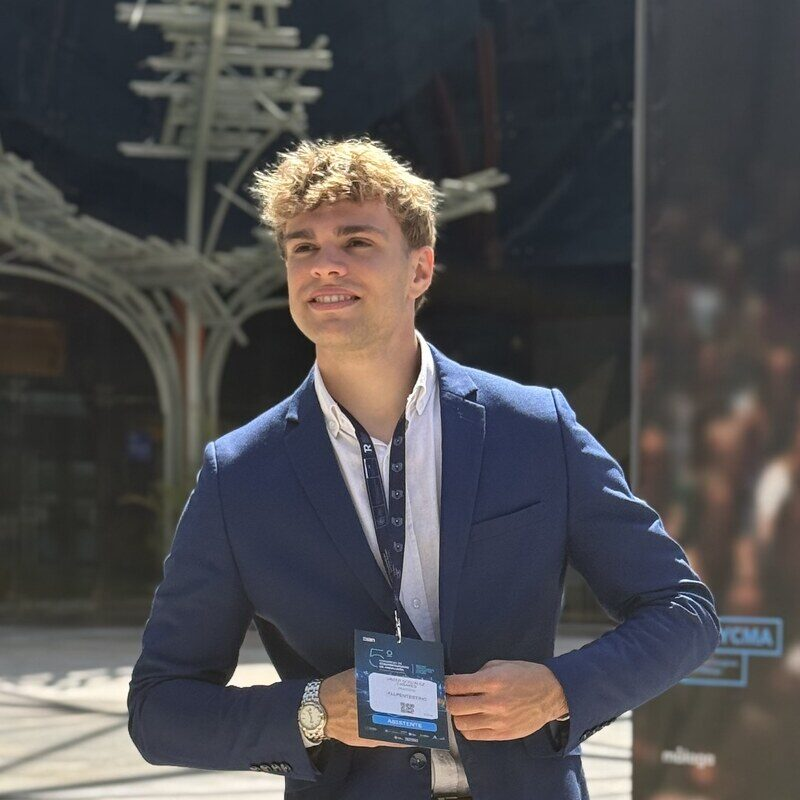

Computer Engineer focused on Cyber Threat Intelligence, malware analysis, digital forensics (DFIR) and offensive security. Graduated from the Higher Polytechnic School of Córdoba (2021–2025) with a Specialization in Computing, currently finishing my MSc in Offensive Security at Campus Internacional de Ciberseguridad while preparing for the OSCP (Dec 2026).
Past internships at AllPentesting (DFIR & CTI), Indra Group (OT Security) and Navantia (defence-sector cybersecurity). Active collaborator with the Spanish National Police on cybercrime investigations. $1,000 Meta Bug Bounty researcher and ex-member of the Caliphal Hounds CTF team (#2 in Spain on CTFTime, 2024).
"As a kid, I used to break things by accident, now I do it on purpose."
Download an up-to-date copy of my curriculum and the recommendation letters that support my work ethic and technical skills.
Vulnerability in Instagram Web that allowed extracting the original note audio via direct video URLs. Responsibly disclosed to Meta, validated and patched. Awarded $1,000 through the Meta Bug Bounty Program.
Open-source toolkit for SPF/DKIM/DMARC/ARC email-authentication audits and authorised SMTP/phishing simulations for Red Team engagements. Cryptographic DKIM verification, IDN homograph detection, MTA-STS / TLS-RPT / DANE / BIMI checks and campaign dashboard with tracking and credential capture (~5k LOC of Python, 167 tests).
Account-takeover vulnerability that allowed changing any password without knowing the current one. Responsibly disclosed to Meta and silently patched.
Client-side time-manipulation vulnerability in the Club Gym Sierra mobile app that enabled unfair early class booking. Responsibly disclosed and patched in version 4.4.19.
Writeups and solutions from the 3rd edition of Hackademics Forum CTF, where I achieved 1st prize in the assistants' competition (sponsored by Hack The Box).
BSc Thesis (graded 10/10) that compares baseline, machine learning and deep learning models to predict market direction in BTC-USD, TSLA and NVDA, including alternative news-sentiment data (GDELT) to evaluate its impact on predictive performance.
Secure, minimalist local password manager using AES-256 GCM and Scrypt key derivation. Includes a CLI for managing encrypted vaults (init, add, list, get, remove, export, import).
Local tactical-intelligence platform for Córdoba CF. Scrapes Sofascore, Transfermarkt and FBref and runs five ML models (lineup selection, injury risk, scouting via autoencoder embeddings, market-value forecasting and opponent style) on a zero-cost local stack.
Encryption application implementing AES-128 in GCM mode with a Tkinter GUI. Authenticated-encryption with key+nonce generation and integrity verification.
Founder of Helion Labs, a company focused on AI business automation that designs and deploys intelligent workflows to streamline operations, reduce repetitive work and help companies scale more efficiently.
Platform built pro-bono for my neighborhood community: residents visualise incidents on a map (security alerts, public-road issues, lost pets) and access a marketplace for professional services and second-hand items. Includes an admin dashboard to triage and coordinate responses.
Developer of buythetop.vip, a monetary ranking platform that aggregates performance metrics and highlights top contributors with automated leaderboard updates and payout tracking.
Automated trading bot focused on keeping orders at the top of the book with adaptive spread control, inventory balancing and risk management for crypto-fiat pairs. Variations deployed on KuCoin and other exchanges with venue-specific tuning.
Telegram bot that transcribes audio and video, automatically improves the generated text and exports results in multiple timestamped formats.
Ongoing stewardship of the Scouts La Salle Córdoba website: keeping content fresh, ensuring availability and reinforcing secure communication for the entire community.
Desktop application that reports real-time upload and download usage alongside latency, interface saturation and alerting thresholds so users can understand the bandwidth footprint of their devices at any moment.
Implementation of the classic Battleship game with network functionality and player communication, written in C using sockets.
Selected BSc coursework available on GitHub: Smart Home Interface (Java), AI implementations of classic ML algorithms (Python), task-management ToDo app (JavaScript) and digital image-processing notebooks (Python).
Won the Best Device Award in the challenge "Intelligent counting device for post-surgery surgical material" during the 4th Biotechnological Hackathon.
Supported cybercrime investigations through OSINT, intelligence analysis and tracing of fraudulent infrastructures across surface, deep and dark web (phishing, fraud, malicious APK campaigns). Forensic acquisition, log review and technical reporting on mobile devices, computers and storage media (FTK Imager, Autopsy, Volatility, Nirsoft, Proxmark3). Reverse-engineering of Android APKs and analysis of logs from VPN, RDP, NAS, Microsoft 365 and OneDrive for malware triage, IoC identification and TTP attribution. Built n8n automations and internal tooling for security audits, threat simulation and phishing analysis; deployed ATAK-CIV / TAK Server environments for tactical coordination with law-enforcement teams.
Designed industrial network diagrams for OT (Operational Technology) environments: device mapping, segmentation and trust zones. Deployed and configured Microsoft Hyper-V virtual machines for internal labs and test scenarios. Completed firewall configuration training and hands-on laboratory work with Siemens PLCs (industrial control systems).
Master's degree focused on offensive security: cryptography, OSINT, malware analysis, reversing, vulnerability assessment, reconnaissance, enumeration, network/system/web hacking.
Currently preparing for the OSCP certification, the industry-standard hands-on penetration-testing credential.
National cybersecurity competition with 100+ teams from Spain and abroad. Reached semifinals representing the Universidad de Córdoba; finished 8th nationally as part of the team "Estatua de gnomos de jardín gnomos de doble dedo".
Recognized as the Week 4 winner in the "El Bug de la Semana" challenge organized by INCIBE and IMMUNE.
Designed and deployed the centre's monitoring and defence infrastructure (SIEM, IDS and router/firewall integration). Built a network testing laboratory for the passive combat systems of naval vessels. Delivered cybersecurity training sessions to colleagues across the department. Automated repetitive operational processes to improve efficiency and traceability.
Provide OSINT and technical analysis for active investigations into web-based scams and online fraud targeting Spanish citizens. Document findings in case-ready evidence packages, applying chain-of-custody and operational discretion.
Awarded for the responsible disclosure of an Instagram Notes privacy bypass (audio leakage via direct video URL extraction). Vulnerability validated and patched by Meta.
BSc Thesis "Predicción direccional de activos financieros con aprendizaje automático y datos alternativos" graded 10/10 by the evaluation committee.
Top finisher in the assistants' competition at Hackademics Forum III CTF, sponsored by Hack The Box.
Erasmus exchange semester abroad in Iași, Romania. Coursework in artificial intelligence, machine learning and software engineering.
One-year member of the Caliphal Hounds CTF team during 2024; the team finished the year ranked #2 in Spain on CTFTime. Specialised in Web, Reversing, Crypto and OSINT challenges.
Specialized training in cybersecurity provided by the National Cryptologic Center (CCN).
Training in design and architecture of complex software systems.
Won the first Hackathon of the Free Software Classroom.
Training in software engineering, operating systems, networks and cybersecurity. Final BSc Thesis graded 10/10.
Active member of the student-led Free Software Classroom and Cybersecurity & Networks Classroom. Contributed talks, workshops and CTF coaching for fellow students.
Participation in the National Cybersecurity League organized by the Civil Guard.
Two-time champion in inter-school debate competitions and debate mentor for younger students.
Active scout since 2008. Served as President of the local youth group (2023–2024), coordinating volunteer teams and leading community-oriented projects.
I'm open to collaboration opportunities, interesting projects, and new challenges.